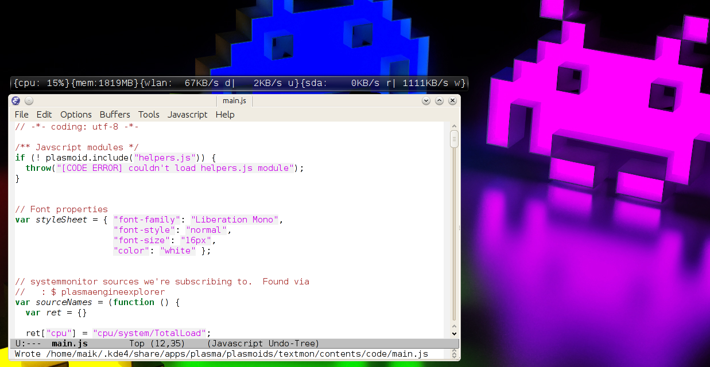

Digitize your TextMon :D

1 Prelude
The very basics you need to try and error your way efficently to the goal.
2 Plasma data engines
The main script of a plasma applet is run exactly once. For being come back at you have to tell plasma what data you want and how often.
3 Hacking TextMon-0.1
A number of examples on how to alter TextMon-0.1 are presented.
4 The next thing
The actual point of TextMon is to give you an hands-on hacking entry point to writing plasma applets. While starting to document TextMon I've learned a lot new things, which aren't reflected in TextMon-0.1 . There are new and foremost much simpler flavors TextMon to come, like
- TextMonCpu
- TextMonMem
- TextMonWlan
- TextMonSda
etc. Eventually I'll come back to this original applet. The code will most like be much simper, easier to understand and tweak.